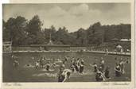

|
|
|
Dorfansicht
 Schwimmbad
|
Das rund 2400 Einwohner zählende Städtchen Bad Bibra mit den Ortsteilen Steinbach, Wallroda und Kalbitz befindet sich im westlichen Burgenlandkreis. Es ist gelegen im nördlichen thüringischen Vorland, zwischen bewaldeten Bergen im Süden und hanglagigen Feldern im Norden, dort, wo Steinbach und Saubach zum Biberbach zusammenfließen. Der Ort ist mit dem PKW über die Bundesstraßen B 176 und B 250 zu erreichen, ebenso mit dem öffentlichen Personen-Nahverkehr. Die nächste Bahnstation ist im 7 km entfernten Laucha/ Unstrut zu finden, bis zur nächsten Autobahnauffahrt sind etwa 40 km zurückzulegen. Die Ortsgründung fällt etwa in die erste Neugründungsperiode im 5. Jhd.. Erste geschichtliche Quellen findet man aber erst seit Karl dem Großen 786, wo eine Reichsburg in Bibraho bezeugt ist. 963 stiftete Herzog Herman Billung hier ein Benediktiner-Kloster, das für 200 Jahre besteht. Von 1100 bis kurz nach der Reformation besteht hier ein Augustiner-Chorherren Stift. Der Flecken Bad Bibra erhält 1124 die Marktgerechtigkeit. In den häufigen Feudalkriegen des Mittelalters, aber auch besonders im Dreißigjährigen und Siebenjährigen Krieg wird Bibra oft zerstört, gebrandschatzt und geplündert. 1657 fiel Bibra bei der brüderlichen Teilung der Herzöge von Sachsen an die von Weißenfels, unter deren Regierung es zu einem Modebad wurde und so zu einer gewissen Blüte gelangte. Jährlich hielten diese hier auf etliche Wochen Hof, um die Stahlquellen zu benutzen und brachten dadurch viel Leben in den Ort. 1812 führte der Marsch der "großen Armee" nach Russland die Armee auch an Bibra vorbei. 1815 wurde Bibra preußisch. Im Jahre 1848 wurde der hiesige Arzt Dr. Stockmann zum Abgeordneten in Berlin gewählt. Unter seiner Führung kam es in Bibra zum Volksbegehren, das jedoch unterdrückt werden konnte. Nach vielen Schicksalsschlägen (Krieg, Wasser, Feuersnot), die die Stadt um die Früchte jahrelanger Arbeit gebracht haben, trat 1875 ein Wandel zum Besseren ein und der Kur- und Badebetrieb nahm neuen Aufschwung. 1925 wurde der Stadt der Titel "Bad" zuerkannt. Bis in die Fünfziger Jahre unseres Jahrhunderts wurde der Badebetrieb dann auch aufrecht erhalten, musste später aber aus Mangel an nötigem Mineralstoffgehalt der Quellen eingestellt werden. Die industrielle Revolution führte auch in Bibra zur Bildung verschiedener Betriebe und besserer Verkehrsverbindungen. In den letzten fünf Jahren wurde auf vielen Gebieten modernisiert und saniert, um der Bevölkerung und den Besuchern den Aufenthalt angenehmer zu gestalten und eine gute Erholung zu garantieren. So besitzt Bad Bibra das modernste Erlebnisbad Sachsen-Anhalts mit vielen Attraktionen. Ebenso bieten unter anderem ein Fitnesscenter und der Tennisplatz die Gelegenheit zur sportlichen Betätigung. Für reges kulturelles Leben sorgen die im Ort ansässigen Vereine. Durch den Reiz der schönen Landschaft und das wohltuende Klima eignet sich Bad Bibra gut für einen Urlaub in ruhiger Lage, mit ausgedehnten Wanderungen in waldreicher Gegend und frischer Luft. Historisch erwähnenswerte Gebäude gibt es in Bad Bibra auch zu entdecken. Auf dem Badeplatz befindet sich ein im Jahre 1879 erbauter Pavillon, der den damals sprudelnden Gesundbrunnen überdachte. Sehenswert sind die Stadtpfarrei aus dem 16. Jhd., die neugotische Stadtkirche sowie das Rathaus mit dem Wahrzeichen der Stadt, dem Biber. Außerhalb des Ortes sind die Schnecktal- und die 12-Apostel-Brücke eindrucksvolle Ausflugsziele für technisch interessierte Besucher, ebenso wie die seit 1724 betriebene Wassermühle der Fam. Nitzsche im Saubachtal. Seit Mai 1995 hat Bad Bibra seinen festen Platz im Landesentwicklungskonzept des Landes Sachsen-Anhalt, und strebt die Prädikatisierung zum "Kneipp-Kurort" an.
* 786 erste
urkundliche Erwähnung als Reichsburg der Ludolfinger zur
* 986 - 200 Jahre
später erhält der Heerführer Herrman Billung die feste
* der 1402 errichtete
Turm der Stiftskirche ist heute noch original
* 1657 gelangt Bibra
an das Herzogtum Sachsen- Weißenfels, unter * von 1777 ist die Neufassung des Gesundbrunnen datiert * 1848 ist der Ort Zentrum einer legalen demokratischen Bewegung
* 1874 wird eine neue
Badeanstalt mit Dampfbetrieb, Promenaden und
* durch die Eröffnung
der Finnebahn im Oktober 1914 erfolgt ein
* obwohl 1925 die
eigentliche Zeit des als Kurort schon vorbei ist, erhält * 1927 Bau des Waldschwimmbades
* bis 1967 besteht
Personenverkehr mit der "Finnebahn" auf der Strecke
|